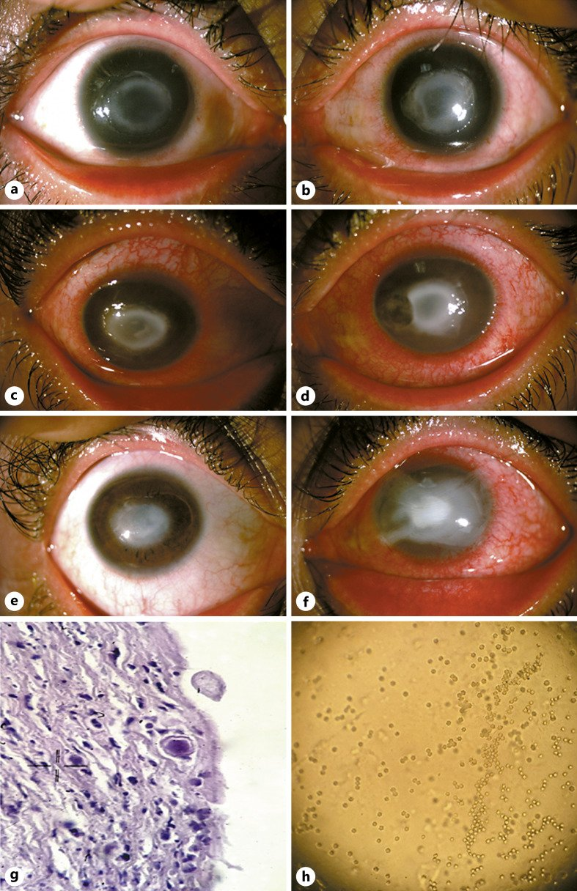
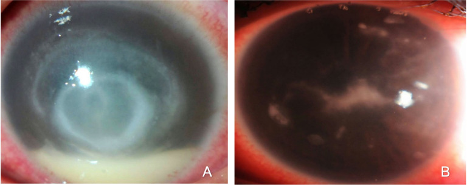
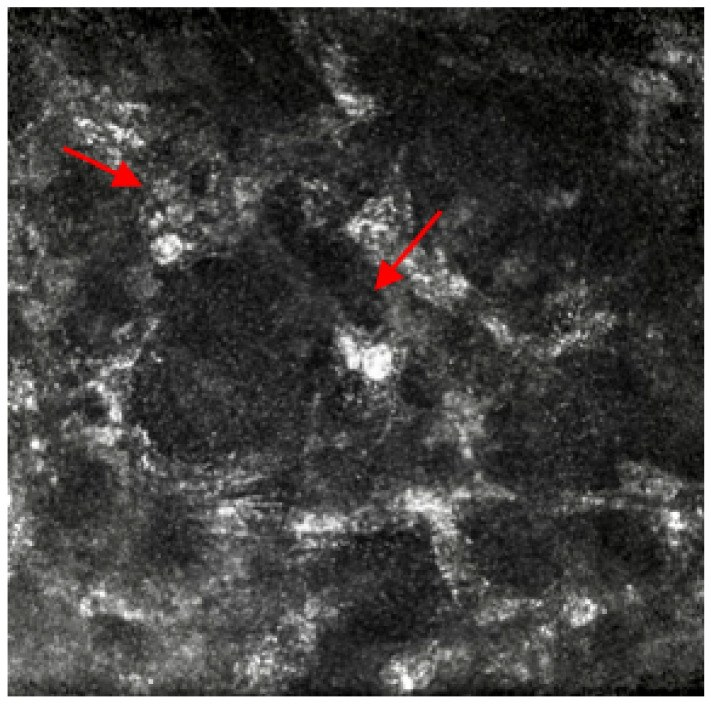
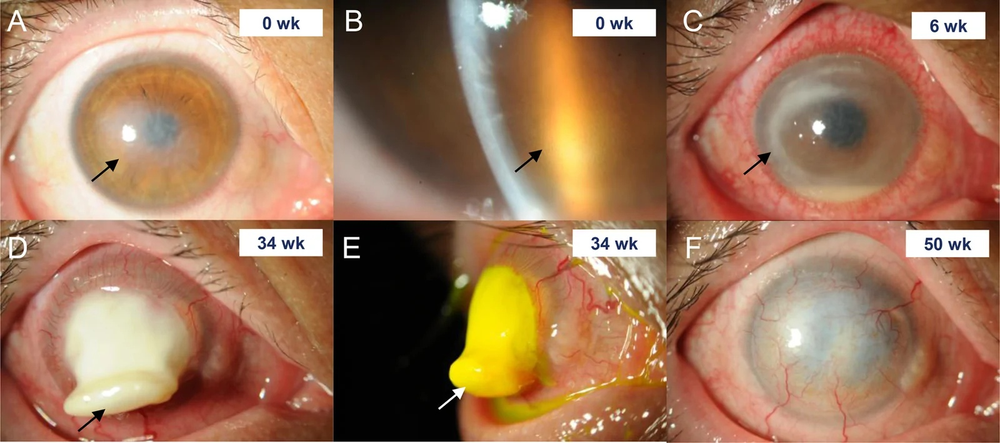

1472 — Viêm giác mạc do Acanthamoeba: đau nhiều hơn tổn thương, viêm thần kinh tỏa tia, nang vách đôi trên IVCM / Acanthamoeba keratitis
Tags: pattern:viem-than-kinh-toa-tia pattern:vong-mien-dich pattern:o-loet-giac-mac pattern:tham-nhien-nhu-mo pattern:mang-noi-mo vung:mat vung:giac-mac protocol:slit-lamp protocol:IVCM protocol:AS-OCT protocol:cam-mau-cay
Mức chắc chắn (certainty): tổng hợp y văn (literature synthesis) — tỉ lệ mắc từ tổng quan sinh học bệnh (PMID 33221372) và nghiên cứu thuần tập Scotland (PMID 16303406); đặc điểm lâm sàng lấy từ loạt 134 mắt viêm giác mạc nhiễm trùng (24–26 mắt Acanthamoeba) tại King Khaled (PMC10931457, CC BY 4.0, PMID 38470877); độ chính xác IVCM từ phân tích gộp 14 nghiên cứu/1.950 mắt (PMID 36977847); kết cục thị lực từ loạt 51 mắt PCR (+) (PMID 38220498); điều trị từ tổng quan Cochrane (PMID 25710134), thử nghiệm ngẫu nhiên PHMB 0,08% so sánh gián tiếp (PMID 40659372) và thử nghiệm pilot voriconazole (PMID 32719525); hình thái nang/trophozoite từ nghiên cứu siêu cấu trúc (PMID 19176099) và IVCM giai đoạn sớm (PMID 23499062). Ca minh hoạ: PMC10601850 (CC BY-NC 4.0), PMC10931457 (CC BY 4.0), PMC10059758 (CC BY 4.0), PMC13550268 (CC BY 4.0). Nhóm không có bệnh nhân của mình.
Câu chốt: Acanthamoeba không phải "loét giác mạc nặng hơn loét vi khuẩn" mà là ký sinh trùng ăn keratocyte và đi DỌC THEO DÂY THẦN KINH GIÁC MẠC — nên dấu hiệu sớm nhất là viêm thần kinh tỏa tia (radial keratoneuritis) ở một mắt đau rất nhiều nhưng đèn khe chưa thấy gì tương xứng, tiền sử kính tiếp xúc + nước máy/hồ bơi. Ba câu hỏi trước khi kê thuốc: (1) có đeo kính tiếp xúc và có rửa kính/nước vào mắt không? (2) đau có vượt xa tổn thương không? (3) đã dùng corticoid chưa? Sai lầm chết người: gọi là herpes → cho corticoid → nang bùng phát, thâm nhiễm lan, chảy mủ nhu mô (melting), mất mắt.
1. Tổng quan bệnh học – cơ chế hình ảnh (TẠI SAO)
1.1 Ngưỡng định lượng (số phải nhớ)
- Tỉ lệ mắc: < 33 ca/1 triệu người đeo kính tiếp xúc/năm ở Hoa Kỳ (PMID 33221372); thuần tập Scotland ghi 1,49/10.000 người đeo kính mềm (≈ 149/triệu) — cao hơn hẳn, và không gặp ca nào khi không đeo kính trong loạt đó (PMID 16303406). Acanthamoeba chiếm khoảng 5% viêm giác mạc liên quan kính tiếp xúc (dẫn trong PMC10931457).
- Ai mắc: trong loạt 26 mắt AK, 96,1% đeo kính tiếp xúc, 73% ≤ 39 tuổi, 73% nữ (p < 0,001); thời gian từ khởi phát đến khám trung vị 9 ngày (2–60 ngày) (PMC10931457).
- Dấu hiệu khi đã đến tuyến chuyên khoa: khuyết biểu mô 100%, mảng nội mô/sau giác mạc 69,2%, viêm thần kinh tỏa tia 46,2%, vòng thâm nhiễm 53,8%, bệnh biểu mô (epitheliopathy) 23,1%, hình sao 23,1% (PMC10931457).
- Kết cục nếu chẩn đoán muộn: 51 mắt PCR (+): thị lực tốt 60,8%, thị lực xấu (≥ 1 logMAR) 39,2%, khoét bỏ/múc nội nhãn 23,5%; chẩn đoán ≤ 14 ngày: OR 19,78 (95% CI 2,07–189,11) cho kết cục tốt, cạo biểu mô điều trị: OR 19,02 (3,27–110,57) (PMID 38220498).
- Sinh học tác nhân: trophozoite 15–45 µm (thể hoạt động, ăn keratocyte); nang (cyst) 10–25 µm, vách đôi (ectocyst + endocyst) — thể kháng thuốc/kháng khô (PMID 19176099). Chính nang là lý do phải điều trị hàng tháng, không phải hàng tuần.
1.2 TẠI SAO "đau nhiều hơn tổn thương"
- Trophozoite bám lectin vào glycoprotein mannose trên biểu mô rồi xuyên qua vi khuyết do kính tiếp xúc → vào nhu mô và đi dọc bao sợi thần kinh.
- Đau do viêm quanh thần kinh (perineural inflammation) chứ không do độ lớn của ổ loét — vì vậy mức đau không tương xứng với diện thâm nhiễm, và giảm cảm giác giác mạc xuất hiện sớm (đối lập với herpes: herpes cũng giảm cảm giác nhưng có đuôi gai bóng tận cùng).
1.3 TẠI SAO có "viêm thần kinh tỏa tia" — và vì sao nó BIẾN MẤT
- Trên đèn khe, thâm nhiễm hình nan hoa men theo các nhánh thần kinh từ rìa vào trung tâm = radial keratoneuritis; tần suất y văn 10–65,9%.
- Thời điểm là tất cả: trong loạt KKESH, viêm thần kinh tỏa tia (RK) có ở 46,2% và chỉ tồn tại trung bình 12,85 ± 11,09 ngày (7–40 ngày), tan sau 7–45 ngày (trung bình 27,85); dấu hiệu viêm quanh thần kinh (perineuritis — thâm nhiễm quanh dây thần kinh, khác RK) xuất hiện 76,9% ngay lần khám đầu, 91,9% trong 7 ngày, tồn tại trung bình 30,65 ± 11,09 ngày (8–55). Y văn dẫn trong bài còn ghi tần suất RK giảm gần một nửa ở ca chẩn đoán muộn, và tỉ lệ RK chung dao động 10–65,9% (PMC10931457).
- Cơ chế quan trọng cho IVCM: ở AK giai đoạn sớm, nang 10–20 µm nằm ở lớp tế bào biểu mô ĐÁY, còn ở nhu mô chỉ thấy keratocyte hoạt hoá xếp hình tổ ong quanh dây thần kinh — không có nang xâm nhập dây thần kinh (PMID 23499062). Nghĩa là: sợi tỏa tia là phản ứng viêm, không phải ấu trùng nằm trong dây thần kinh → khi soi IVCM phải quét lớp biểu mô đáy trước, đừng chỉ tìm trong nhu mô sâu rồi kết luận âm.
1.4 TẠI SAO có "vòng miễn dịch" và vì sao corticoid làm mất nó
- Vòng thâm nhiễm = vòng Wessely: phức hợp kháng nguyên–kháng thể–bổ thể + bạch cầu đa nhân lắng trong nhu mô; xuất hiện trong tháng đầu ở 20–50% ca, tăng dần theo thời gian; trong loạt trên 53,8% ca AK có vòng, 14/15 vòng (93,3%) là AK, tồn tại trung bình 37 ngày (7–120) (PMC10931457).
- Vì là phản ứng miễn dịch, corticoid làm vòng mờ đi (giảm tần suất) và vòng có thể xuất hiện lại trong 2 ngày sau khi ngừng corticoid — nên "vòng mất sau corticoid" không phải bằng chứng lành, mà là bằng chứng đang che một nhiễm trùng.
- Vòng KHÔNG đặc hiệu: gặp ở nấm, vi khuẩn, Pythium, và cả herpes — giá trị nằm ở bối cảnh + dấu hiệu đi kèm, không ở bản thân vòng.
1.5 Vật lý của các phương tiện "thấy Acanthamoeba"
- Đèn khe: phóng đại 10–40×, ánh sáng khe cho lát cắt quang học → đo diện thâm nhiễm (mm), độ sâu, tế bào tiền phòng. Giới hạn: không thấy nang 10–25 µm.
- IVCM (soi đồng tiêu in vivo): độ phân giải ngang ≈ 1 µm, thu ánh sáng phản xạ → vách nang cellulose phản xạ mạnh: hình tròn/bầu dục, vách đôi, 10–25 µm (trên lâm sàng giai đoạn sớm đo được 10–20 µm ở biểu mô đáy — PMID 23499062). Phân tích gộp 14 nghiên cứu/1.950 mắt: Se 94%, Sp 87%, PPV 89%, NPV 92% (PMID 36977847); trong loạt KKESH, 19,2% ca chỉ IVCM dương (cấy/nhuộm âm) (PMC10931457).
- AS-OCT: độ phân giải trục 5–10 µm → đo độ dày/độ sâu thâm nhiễm theo µm, phát hiện mảng nội mô (dấu hiệu đã xuyên hết nhu mô) và theo dõi đáp ứng khách quan.
- Cạo giác mạc: tiêu chuẩn vàng nhưng chậm (3–7 ngày) và độ nhạy thấp — nhuộm calcofluor white/Giemsa, cấy trên thạch không dinh dưỡng có phết E. coli, PCR 18S rRNA. Cấy âm không loại trừ → không được chờ cấy mới điều trị.
2. Mẫu hình + chẩn đoán phân biệt theo giai đoạn (gamut)
- Giai đoạn sớm (0–4 tuần) — "đau >> dấu chứng": bệnh biểu mô dạng giả đuôi gai (pseudodendrite), viêm thần kinh tỏa tia, giác mạc giảm cảm giác, thâm nhiễm nummular dưới biểu mô. Ở bước này chẩn đoán phân biệt khó nhất là herpes.
- Giai đoạn trung gian (1–3 tháng): vòng miễn dịch, thâm nhiễm nhu mô lan, mảng nội mô/sau giác mạc (69,2%), mủ tiền phòng "vô khuẩn", phù giác mạc. Ở bước này bắt chước nấm.
- Giai đoạn muộn (> 3 tháng): chảy mủ/hoại tử nhu mô (corneal melting), mỏng–thủng, củng mạc viêm, cataract, glôcôm, teo nhãn — đúng diễn tiến của ca PMC13550268 (0 → 6 → 34 → 50 tuần).
- Gamut theo cơ chế tổn thương:
- Nhiễm trùng: Acanthamoeba, Pseudomonas (nhanh, mủ xanh, vành lan), nấm sợi (bờ lông vũ, vệ tinh), HSV/VZV (đuôi gai thật, bóng tận cùng), Pythium (bờ "bờ sông", tiến triển cực nhanh, không có ergosterol nên azole vô hiệu).
- Không nhiễm trùng: viêm giác mạc do dung dịch bảo quản/kính (CLARE/toxicity), viêm giác mạc chấm nông, loét thần kinh dưỡng (neurotrophic), bệnh mắt khô nặng, phản ứng thấu kính.
- Gợi nhớ AK: Acanthamoeba = Anh sáng khe + Kính tiếp xúc + đau (mnemonic tự biên, không phải chuẩn y văn).
3. Bảng so sánh phân biệt (ma trận đối chiếu)
| Thực thể (entity) | Hình ảnh điển hình (đèn khe / IVCM / AS-OCT) | Chốt vào (rule-in) | Chốt loại (rule-out) | Gợi ý xác nhận |
|---|---|---|---|---|
| Acanthamoeba | Bệnh biểu mô giả đuôi gai + viêm thần kinh tỏa tia + vòng Wessely + mảng nội mô; IVCM nang vách đôi 10–25 µm ở biểu mô đáy; AS-OCT thấy thâm nhiễm sâu | Đeo kính + tiếp xúc nước máy/hồ bơi + đau >> tổn thương + viêm thần kinh tỏa tia (46,2%) hoặc vòng (53,8%); IVCM dương | Đuôi gai thật có bóng tận cùng + đáp ứng kháng virus trong 7–10 ngày → herpes; bờ lông vũ + vệ tinh → nấm | IVCM (Se 94%) + PCR 18S; cạo biểu mô điều trị (OR 19,02 kết cục tốt) |
| Herpes (HSV) | Đuôi gai thật, bóng tận cùng, bờ nham nhở, giảm cảm giác; ít viêm thần kinh tỏa tia; không mảng nội mô kiểu AK | Đuôi gai điển hình + tiền sử herpes + đáp ứng acyclovir | Không có đuôi gai, đau vượt xa tổn thương, có vòng + mảng nội mô → nghĩ AK | PCR HSV dịch/ổ loét; không dùng corticoid đơn thuần khi chưa loại AK |
| Nấm sợi (Fusarium/Aspergillus) | Bờ lông vũ, vệ tinh, thâm nhiễm nhu mô sâu, mảng nội mô; IVCM sợi 2–6 µm phân nhánh | Chấn thương thực vật/bụi + bờ lông vũ + vệ tinh | Nang tròn vách đôi (không phải sợi) + tiền sử kính → AK | Cạo + cấy Sabouraud, IVCM; xem bài 1460 |
| Vi khuẩn (Pseudomonas) | Thâm nhiễm đặc, vành lan nhanh, mủ tiền phòng, đau tương xứng, tiến triển giờ | Khởi phát < 24–48 giờ, mủ xanh, vành lan | Diễn tiến nhiều ngày–tuần, đau vượt xa tổn thương → không phải vi khuẩn điển hình | Nhuộm Gram + cấy; không chờ |
| Pythium insidiosum | Vòng thâm nhiễm + bờ như bờ sông, lan cực nhanh, đau nhiều | Tiến triển tính bằng ngày + vòng + không đáp ứng azole | Đáp ứng tốt với biguanide + thời gian dài → AK | Cấy/PCR; phải mổ sớm khi vượt giới hạn nội khoa |
| Bệnh biểu mô do dung dịch/kính (toxicity) | Chấm nông đối xứng, ngừng kính là đỡ trong 48–72 giờ, không thâm nhiễm nhu mô | Ngừng kính + đổi dung dịch → hết trong 2–3 ngày | Không đỡ sau 72 giờ hoặc có thâm nhiễm nhu mô/vòng → không phải toxicity | Thử ngừng kính có kiểm soát |

*Ca hai mắt: (a) mắt phải — thâm nhiễm nhu mô từng đám kèm viêm thần kinh tỏa tia; (b) mắt trái — khuyết biểu mô + vòng thâm nhiễm + viêm thần kinh tỏa tia + phù nhu mô; (c–f) diễn tiến 1 tháng → 8–15 tuần; (g) mô bệnh; (h) cấy. Nguồn: Case Reports in Ophthalmology 2023 (PMC10601850), CC BY-NC 4.0 — nguyên bản, không cắt.*4. Protocol chụp/khám + hệ phân độ & điều trị
4.1 Trình tự khám (không được đảo)
- Đèn khe + fluorescein: đo diện thâm nhiễm (mm), ghi độ sâu theo 1/3 nhu mô, tế bào/ flare tiền phòng, nhãn áp, lật mi tìm hạt/dị vật, cảm giác giác mạc (sợi bông).
- Hỏi 5 câu bắt buộc: loại kính (mềm/ortho-K), ngủ/tắm/bơi với kính, rửa kính bằng nước máy, dung dịch đang dùng, thời gian từ lúc khởi phát (ngưỡng vàng ≤ 14 ngày).
- IVCM ngay (nếu có máy): quét biểu mô → biểu mô đáy → Bowman → nhu mô trước/giữa/sâu ở ≥ 4 góc phần tư; tìm nang tròn vách đôi 10–25 µm, trophozoite, tế bào viêm; ghi ảnh từng lớp để so sánh lượt sau.
- AS-OCT: đo độ dày giác mạc (µm), độ sâu thâm nhiễm, mảng nội mô, khoảng trống giữa mảng và nội mô (giúp phân biệt mảng do nấm lan từ ổ chính).
- Cạo giác mạc (sau khi lấy bệnh phẩm mới được nhỏ thuốc): 3 tiêu bản (Gram, Giemsa, calcofluor white) + cấy thạch không dinh dưỡng phết E. coli + PCR 18S rRNA + cấy vi khuẩn/nấm; cấy kính + dung dịch + hộp đựng.
4.2 Điều trị (số liệu, không "theo kinh nghiệm")
- Nền tảng: biguanide ± diamidine. Thử nghiệm ngẫu nhiên duy nhất (Cochrane, PMID 25710134): chlorhexidine 0,02% vs PHMB 0,02% — lành 86% vs 78%, thời gian điều trị 51–145 ngày.
- PHMB 0,08% (đã được EMA phê duyệt): lành không cần mổ trong 12 tháng 84,8% (n = 66) vs 55,0% (PHMB 0,02% + diamidine) vs 43,6% (mọi phác đồ kháng amip khác) (PMID 40659372) — khác biệt tuyệt đối +29,9% so với PHMB 0,02% + diamidine.
- Nhịp nhỏ: mỗi giờ cả ngày và đêm trong 48–72 giờ đầu, sau đó giãn theo đáp ứng; tổng thời gian tính bằng tháng (thường 3–12 tháng), và chỉ ngừng khi hết thâm nhiễm + IVCM âm + hết viêm tiền phòng; giảm nhanh → tái phát.
- Phối hợp: diamidine (propamidine/hexamidine 0,1%) luân phiên; voriconazole 1% đơn trị trong thử nghiệm pilot tương đương phối hợp biguanide (giảm diện thâm nhiễm từ 5,7 mm → 1 mm, PMID 32719525) nhưng cỡ mẫu nhỏ; miltefosine uống và PACK-CXL chỉ là hỗ trợ, không thay thuốc.
- Cạo biểu mô điều trị (therapeutic epithelial debridement): giảm tải nang + tăng thấm thuốc — gắn với kết cục tốt OR 19,02 (PMID 38220498).
- Corticoid: không dùng trước khi xác định/chưa có che phủ kháng amip đầy đủ — corticoid liên quan chẩn đoán muộn và tiên lượng xấu, và làm nang kết cụm (dễ nhầm tổ ong của nấm) (PMC10931457). Nếu phải dùng vì viêm nội nhãn nặng: sau ≥ 2–4 tuần che phủ hiệu quả, liều thấp, giảm rất chậm, khám lại 48–72 giờ.
- Mổ: ghép giác mạc tectonic/therapeutic (PKP/DALK) khi mỏng–thủng hoặc sẹo đục sau lành; 23,5% mắt trong nhóm kết cục xấu phải khoét bỏ/múc nội nhãn (PMID 38220498) — con số dùng để tư vấn, không để trấn an.
flowchart TD
A["Một mắt đau nhiều + đeo kính tiếp xúc"] --> B{"Viêm thần kinh tỏa tia, vòng, giảm cảm giác?"}
B -->|"Có"| C["Nghi Acanthamoeba: IVCM + cạo giác mạc + PCR"]
B -->|"Không, chỉ đuôi gai"| D["Nghi herpes: PCR HSV, KHÔNG corticoid đơn thuần"]
C --> E{"IVCM thấy nang vách đôi 10-25 µm?"}
E -->|"Có"| F["PHMB 0,08% hoặc PHMB 0,02% + chlorhexidine 0,02% mỗi giờ 48-72 giờ"]
E -->|"Không nhưng lâm sàng điển hình"| F
F --> G["Cạo biểu mô điều trị + giảm liều theo tuần"]
G --> H{"Hết thâm nhiễm + IVCM âm + hết viêm tiền phòng?"}
H -->|"Chưa"| G
H -->|"Rồi"| I["Duy trì liều thấp 4-8 tuần rồi ngừng, hẹn 2 tuần"]
H -->|"Mỏng, thủng, melting"| J["Ghép tectonic / PKP, cân nhắc AMT"]
5. Biến thể bình thường và cạm bẫy
- Viêm thần kinh tỏa tia KHÔNG đặc hiệu: trong loạt KKESH, 12/13 mắt có dấu hiệu này là AK, nhưng 1 ca là herpes PCR (+) và y văn ghi nhận cả nấm/vi khuẩn → không chốt một mình.
- Vòng miễn dịch bị corticoid "chữa lành" giả tạo: vòng mờ đi trong 1–2 tuần rồi bùng lại trong 2 ngày sau khi ngừng → dễ kết luận "viêm đã đỡ, tiếp tục corticoid".
- Đuôi gai giả (pseudodendrite) của AK vs đuôi gai herpes: AK không có bóng tận cùng, bờ mềm, đau nhiều, kèm thâm nhiễm dưới biểu mô; herpes bóng tận cùng rõ, bờ nham nhở, giảm cảm giác.
- IVCM âm không loại trừ: phụ thuộc người đọc và vị trí quét (nang ở biểu mô đáy — PMID 23499062), tổn thương sâu/nang thưa → Se 94% nghĩa là 6% âm giả.
- Nang kết cụm sau corticoid dễ nhầm tổ ong của bạch cầu trong nấm; phân biệt bằng vách đôi rõ + kích thước 10–25 µm và bờ tổn thương trên đèn khe.
- Cạo biểu mô lấy bệnh phẩm sai thứ tự: nhỏ thuốc kháng amip/kháng sinh trước khi cạo làm giảm tỉ lệ dương.
- Ortho-K và kính qua đêm là bối cảnh kinh điển nhưng dễ bị bỏ qua khi bệnh nhân nói "chỉ đeo ban ngày".
- Cạm bẫy "thỏa mãn tìm kiếm": thấy mảng nội mô là nghĩ nấm và dừng lại — AK cũng có mảng nội mô ở 69,2%.
6. Tự lượng giá — Blind Quiz (ảnh ngoài, đáp án trong)
Ca 1 — Nam 24 tuổi, đeo kính mềm, đau mắt phải 5 ngày, đèn khe chỉ thấy "hơi mờ". Nhìn 2 mắt (a, b) trước.
- Gợi ý lâm sàng: đau nhiều, sợ ánh sáng, rửa kính bằng nước máy.
- Câu hỏi: dấu hiệu nào không phải "mờ đều"? Dấu hiệu đó đi theo cấu trúc giải phẫu nào? 3 chẩn đoán phân biệt và xét nghiệm chốt?
Bấm để hiện đáp án
- Findings: (a) mắt phải — thâm nhiễm nhu mô từng đám + các đường tỏa tia men theo dây thần kinh từ rìa vào trung tâm (radial keratoneuritis); (b) mắt trái — khuyết biểu mô + vòng thâm nhiễm + tỏa tia + phù nhu mô.
- Chẩn đoán: viêm giác mạc do Acanthamoeba hai mắt. Tỏa tia = viêm quanh dây thần kinh, không phải ấu trùng trong dây.
- Vì sao: nang 10–25 µm, vách đôi; trophozoite 15–45 µm ăn keratocyte → thâm nhiễm men theo thần kinh; đau do viêm quanh thần kinh.
- Loại trừ: herpes (đuôi gai có bóng tận cùng, đáp ứng kháng virus), nấm (bờ lông vũ + vệ tinh), vi khuẩn (mủ đặc, tiến triển giờ).
- Chốt: IVCM (Se 94%) + PCR 18S + cạo biểu mô; không corticoid.
- Nguồn: Case Reports in Ophthalmology 2023 (PMC10601850), CC BY-NC 4.0.
Ca 2 — Nữ 31 tuổi, đeo kính, đau 3 tuần, đã nhỏ "thuốc chống viêm" ở tuyến trước. Nhìn (A) và (B).

- Câu hỏi: (A) gọi tên dấu hiệu và cơ chế; (B) tổn thương nằm ở lớp nào và nói lên điều gì về độ sâu? Vì sao không được kết luận "đỡ" khi vòng mờ đi?
Bấm để hiện đáp án
- Findings: (A) vòng thâm nhiễm (vòng Wessely) trong nhu mô; (B) mảng nội mô / mảng sau giác mạc (retrocorneal plaque).
- Cơ chế: (A) phức hợp kháng nguyên–kháng thể–bổ thể + bạch cầu đa nhân; (B) tế bào viêm + tác nhân lắng ở mặt sau giác mạc → đã xuyên hết nhu mô.
- Số liệu: vòng gặp 53,8% ca AK, tồn tại trung bình 37 ngày (7–120); mảng nội mô 69,2%; 14/15 vòng (93,3%) trong loạt là AK.
- Vì sao không "đỡ": corticoid làm mờ vòng (giảm phản ứng miễn dịch) và vòng có thể bùng lại trong 2 ngày sau ngừng — mờ vòng không đồng nghĩa hết ký sinh trùng.
- Nguồn: PLOS ONE 2024 (PMC10931457), CC BY 4.0.
Ca 3 — Cùng bệnh nhân ca 2, máy IVCM: đây là gì?

- Câu hỏi: mô tả hình dạng/kích thước/vách; vì sao phải quét biểu mô đáy trước; độ chính xác của IVCM?
Bấm để hiện đáp án
- Findings: nhiều cấu trúc tròn/bầu dục, phản xạ mạnh, VÁCH ĐÔI, đường kính 10–25 µm (mũi tên đỏ) = nang Acanthamoeba; cạnh đó là cấu trúc bầu dục phản xạ mạnh (thể trophozoite/khối tế bào).
- Vì sao biểu mô đáy: ở AK sớm nang nằm ở lớp tế bào biểu mô đáy (10–20 µm), nhu mô chỉ có keratocyte hình tổ ong quanh dây thần kinh (PMID 23499062). Quét nhu mô sâu rồi kết luận âm là âm giả.
- Độ chính xác: gộp 14 nghiên cứu/1.950 mắt — Se 94%, Sp 87%, PPV 89%, NPV 92% (PMID 36977847); 19,2% ca chỉ IVCM dương (PMC10931457).
- Nguồn: Life 2023 (PMC10059758), CC BY 4.0.
Ca 4 — Bệnh nhân được chẩn đoán "viêm nội mô do virus" và dùng corticoid toàn thân; xem chuỗi 0 → 6 → 34 → 50 tuần.

- Câu hỏi: ở tuần 0 (A, B) dấu hiệu gì đánh lạc hướng? Điều gì xảy ra ở tuần 6 và 34? Bài học điều trị?
Bấm để hiện đáp án
- Tuần 0: phù nhu mô lan + mờ giác mạc + nếp gấp màng Descemet + tủa lắng nội mô mịn → bắt chước viêm nội mô do virus; không có vòng, không có tỏa tia rõ ở bước này.
- Tuần 6: khuyết biểu mô ngoại vi + vòng thâm nhiễm tiến triển + mủ tiền phòng → mới nghĩ AK và bắt đầu chlorhexidine.
- Tuần 34: hoại tử nhu mô, chảy mủ (melting), mô hoại tử lồi ra; tuần 50: sẹo mạch máu hoá.
- Bài học: (1) corticoid trước chẩn đoán làm mờ dấu hiệu và đẩy nhanh hoại tử; (2) chẩn đoán ≤ 14 ngày cho OR 19,78 kết cục thị lực tốt, 39,2% ca chẩn đoán muộn có thị lực xấu và 23,5% mất mắt (PMID 38220498).
- Nguồn: Journal of Ophthalmic Inflammation and Infection 2026 (PMC13550268), CC BY 4.0.
Bài liên quan chéo
- 400 – Tổng quan Mắt & thị giác
- 1460 – Viêm giác mạc do nấm (bờ lông vũ, vệ tinh, mảng nội mô — hàng phân biệt sát nhất)
- 1456 – Bỏng hóa chất mắt (khuyết biểu mô + mất mạch rìa)
- 1445 – Bong mảnh ghép DSAEK/DMEK (phù giác mạc sau ghép — bối cảnh IVCM/AS-OCT)
Ảnh
1472_acanthamoeba_AnhSang_PMC10601850.jpg— hai mắt: thâm nhiễm từng đám + viêm thần kinh tỏa tia; Case Reports in Ophthalmology 2023, PMC10601850, CC BY-NC 4.0, nguyên bản.1472_acanthamoeba_AnhSang_PMC10931457.jpg— (A) vòng thâm nhiễm, (B) mảng nội mô; PLOS ONE 2024, PMC10931457, CC BY 4.0, nguyên bản.1472_acanthamoeba_IVCM_PMC10059758.jpg— IVCM nang vách đôi; Life 2023, PMC10059758, CC BY 4.0, nguyên bản.1472_acanthamoeba_AnhSang_PMC13550268.jpg— chuỗi 0/6/34/50 tuần; J Ophthalmic Inflamm Infect 2026, PMC13550268, CC BY 4.0, nguyên bản.- Không tải: Radiopaedia (chỉ dẫn link từng ca), AuntMinnie (paywall).
Không dùng để chẩn đoán độc lập khi chưa có người hướng dẫn.